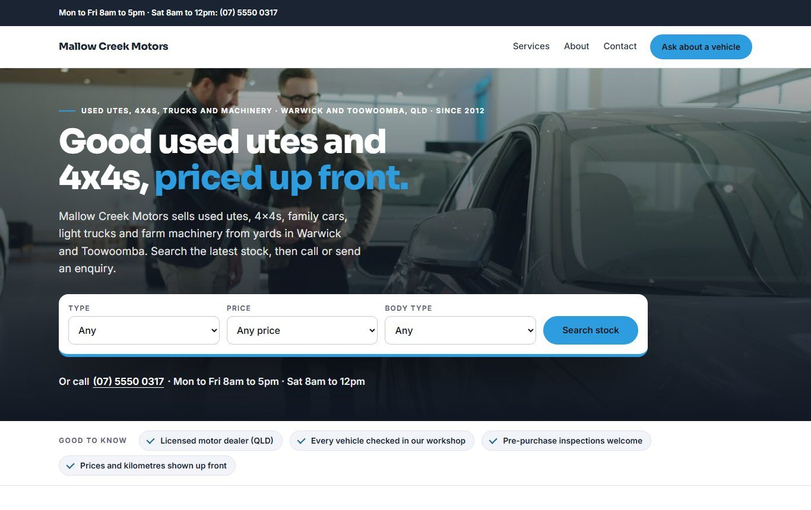
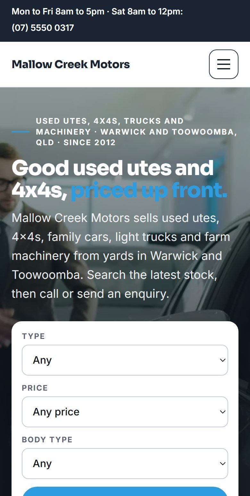

Home / Automotive and transport
Demo buildVehicle and machinery dealer website
Mallow Creek Motors is a made-up business. We built this site to show what we do. It is not a real business or a client's site.
The facts.
- Business
- Mallow Creek Motors (fictional)
- Industry
- Automotive and transport
- Layout
- Stock first
- Pages
- 4
- Colours
- #1a2433#2e9de0
- Works offline
- Yes
- Built from
- Our design system, tailored to the business
The home page, on two screens.


The problem.
Buyers search for a ute or a tractor on their phone before they visit a yard.
They want price, kilometres and where it is, fast.
If they cannot see the stock, they go to a site that shows it.
What we built.
Tap each one to see why it matters and how we build it.
Book a serviceA booking form that asks for the vehicle and the job.
Why it matters
A booking form that asks for the vehicle and the job.
How we build it
A booking form that asks make, model and job, or links to your booking system.
Stock listVehicles and machinery for sale, with photos and an enquire button.
Why it matters
Vehicles and machinery for sale, with photos and an enquire button.
How we build it
A Stock page with photo cards and an Enquire button on each one.
Breakdown call-outA tap-to-call button that stays on screen on a phone.
Why it matters
A tap-to-call button that stays on screen on a phone.
How we build it
A call button that stays fixed at the bottom of the screen on phones.
Fleet accountsA clear path for transport and farm fleet customers.
Why it matters
A clear path for transport and farm fleet customers.
How we build it
A Fleet page that explains accounts and has its own enquiry form.
Ready to see your three designs?
The brief takes about ten minutes.